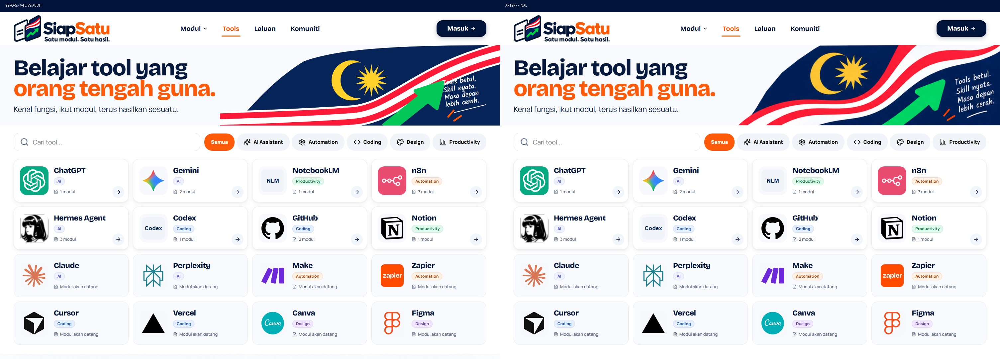
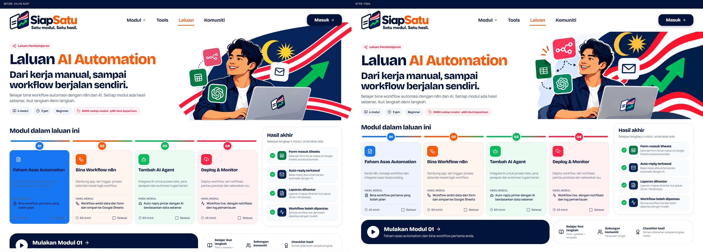

SiapSatu — reference extraction repair
Original reference / before v4 / final captures. Full screenshots and geometry remain beside this viewer.
home
Reference pair · 50% overlaytools
Reference pair · 50% overlay
paths-ai-automation
Reference pair · 50% overlay
community
Reference pair · 50% overlay